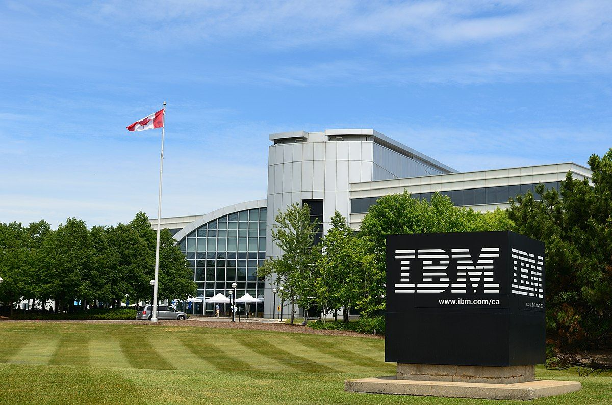
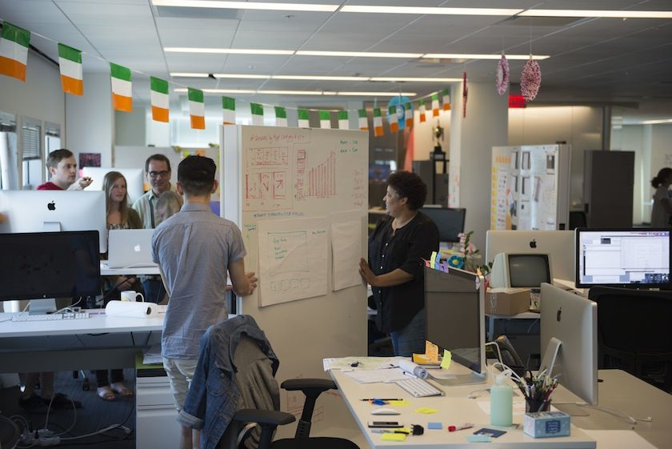

◑ Who are we?

International Business Machines Corporation (IBM) is an American multinational information technology company headquartered in Armonk, New York, with operations in over 170 countries. The company began in 1911, founded in Endicott, New York, as the Computing-Tabulating-Recording Company (CTR) and was renamed "International Business Machines" in 1924.
IBM produces and sells computer hardware, middleware and software, and provides hosting and consulting services in areas ranging from mainframe computers to nanotechnology. IBM is also a major research organization, holding the record for most U.S. patents generated by a business (as of 2019) for 26 consecutive years. Inventions by IBM include the automated teller machine (ATM), the floppy disk, the hard disk drive, the magnetic stripe card, the relational database, the SQL programming language, the UPC barcode, and dynamic random-access memory (DRAM). The IBM mainframe, exemplified by the System/360, was the dominant computing platform during the 1960s and 1970s.
IBM has continually shifted business operations by focusing on higher-value, more profitable markets. This includes spinning off printer manufacturer Lexmark in 1991 and the sale of personal computer (ThinkPad/ThinkCentre) and x86-based server businesses to Lenovo (in 2005 and 2014, respectively), and acquiring companies such as PwC Consulting (2002), SPSS (2009), The Weather Company (2016), and Red Hat (agreement announced in October 2018, actual acquisition to be in the second half of 2019). Also in 2014, IBM announced that it would go "fabless", continuing to design semiconductors, but offloading manufacturing to GlobalFoundries.
|
◕ About Our Employees

IBM has several leadership development and recognition programs to recognize employee potential and achievements. For early-career high potential employees, IBM sponsors leadership development programs by discipline (e.g., general management (GMLDP), human resources (HRLDP), finance (FLDP)). Each year, the company also selects 500 IBMers for the IBM Corporate Service Corps (CSC), which has been described as the corporate equivalent of the Peace Corps and gives top employees a month to do humanitarian work abroad. For certain interns, IBM also has a program called Extreme Blue that partners top business and technical students to develop high-value technology and compete to present their business case to the company's CEO at internship's end.
The company also has various designations for exceptional individual contributors such as Senior Technical Staff Member (STSM), Research Staff Member (RSM), Distinguished Engineer (DE), and Distinguished Designer (DD). Prolific inventors can also achieve patent plateaus and earn the designation of Master Inventor. The company's most prestigious designation is that of IBM Fellow. Since 1963, the company names a handful of Fellows each year based on technical achievement. Other programs recognize years of service such as the Quarter Century Club established in 1924, and sellers are eligible to join the Hundred Percent Club, composed of IBM salesmen who meet their quotas, convened in Atlantic City, New Jersey.
Each year, the company also selects 1,000 IBMers annually to award the Best of IBM Award, which includes an all-expenses paid trip to the awards ceremony in an exotic location. IBM's culture has evolved significantly over its century of operations. In its early days, a dark (or gray) suit, white shirt, and a "sincere" tie constituted the public uniform for IBM employees. During IBM's management transformation in the 1990s, CEO Louis V. Gerstner, Jr. relaxed these codes, normalizing the dress and behavior of IBM employees.
|